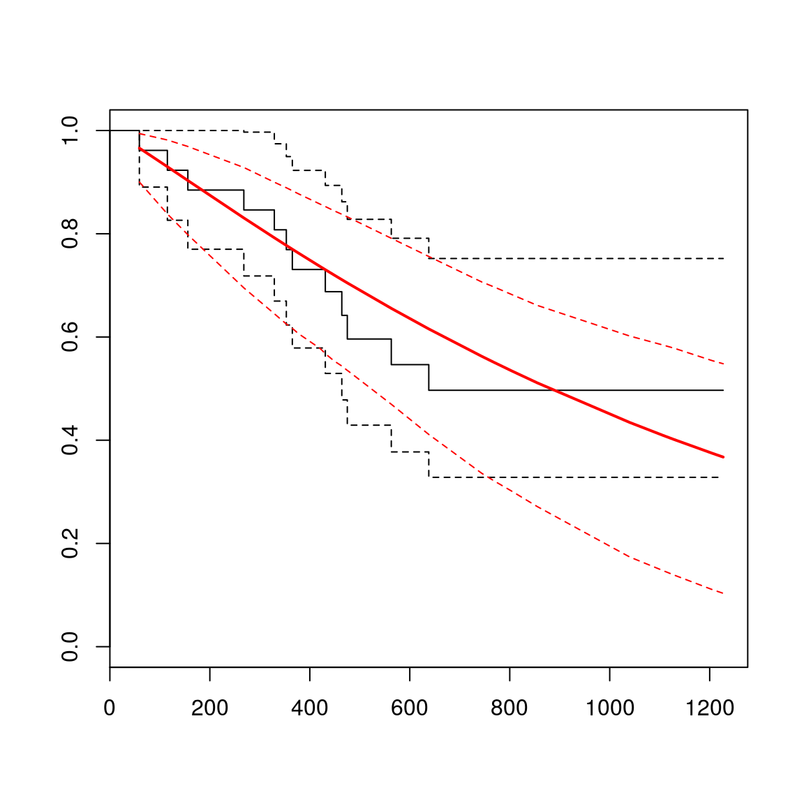
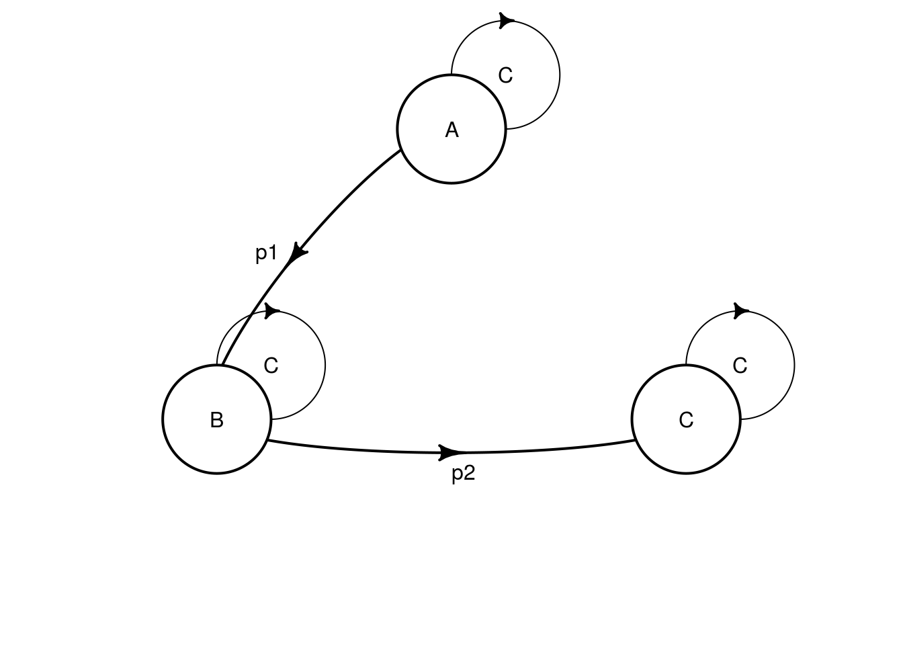
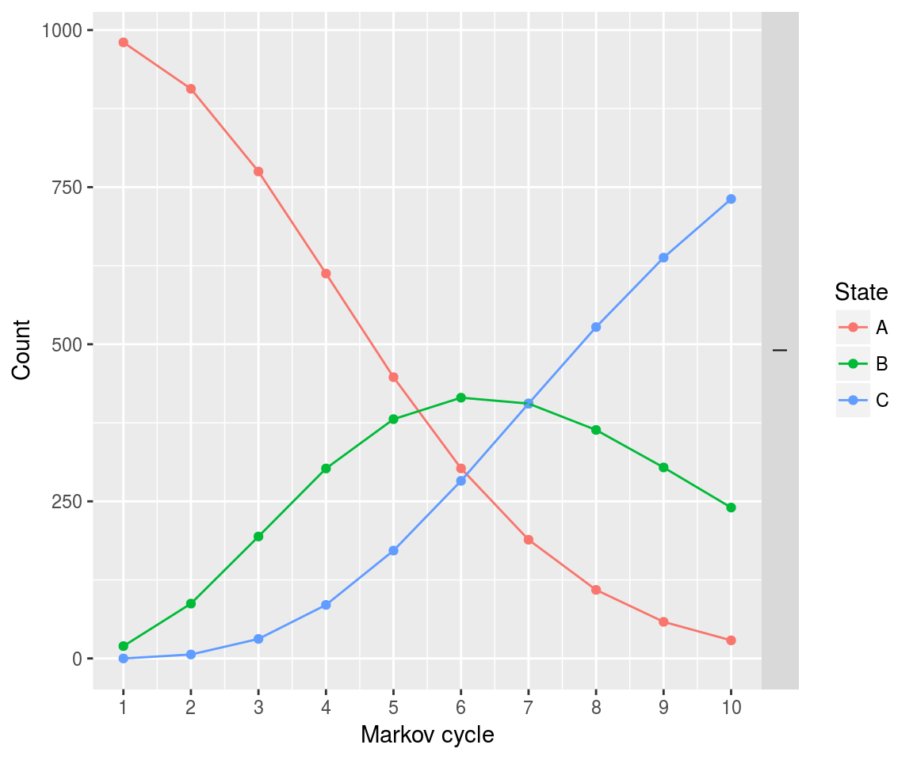
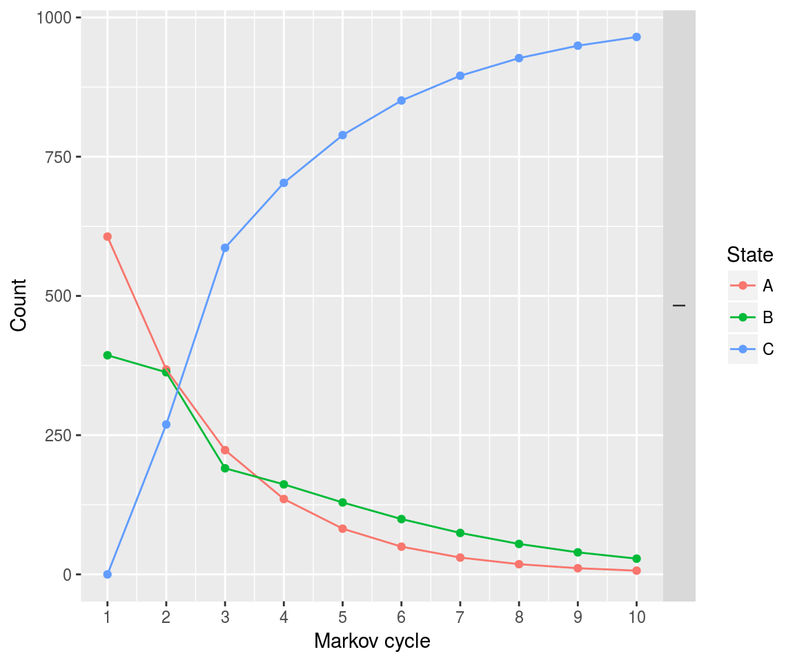

Input transition probabilities from defined distributions:
surv_dist1 <- define_survival(
distribution = "weibull",
shape = 2,
scale = 5
)From fitted models:
library(flexsurv)
fitw <- flexsurvreg(
formula = Surv(futime, fustat) ~ 1,
data = ovarian, dist = "weibull"
)
plot(fitw)
For the example we define a simple model with only 1 strategy:
param <- define_parameters(
p1 = get_probs_from_surv(
surv_dist1,
cycle = markov_cycle # can also be state_cycle
),
p2 = get_probs_from_surv(
fitw,
cycle = markov_cycle,
cycle_length = 365, # time is in days in fitw, in years in markov_cycle
km_limit = 2 # use KM estimates during the first 2 years
)
)
tm <- define_transition(
C, p1, 0,
0, C, p2,
0, 0, C
)## No named state -> generating names.plot(tm)
sA <- define_state(
cost = 10, ut = 1
)
sB <- define_state(
cost = 20, ut = .5
)
sC <- define_state(
cost = 0, ut = 0
)
stratTM <- define_strategy(
transition = tm,
A = sA, B = sB, C = sC
)
resTM <- run_model(
parameters = param,
stratTM,
cycles = 10
)## No named model -> generating names.plot(resTM)
A partitioned survival model can also be computed:
surv_dist2 <- define_survival(
distribution = "exp",
rate = .5
)
ps <- define_part_surv(
pfs = surv_dist2,
os = fitw,
km_limit = c(0, 2), # 0 for pfs, 2 for os
cycle_length = c(1, 365) # 1 for pfs, 365 for os
)## No named state -> generating names.stratPS <- define_strategy(
transition = ps,
A = sA, B = sB, C = sC
)
resPS <- run_model(
stratPS,
cycles = 10
)## No named model -> generating names.plot(resPS)